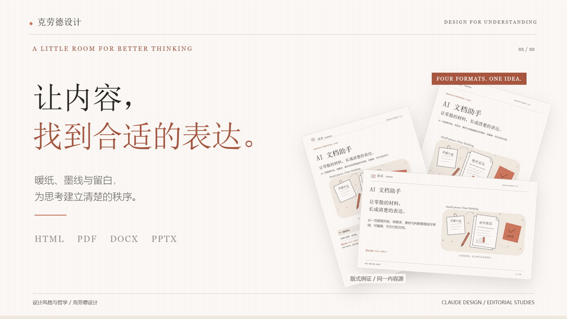
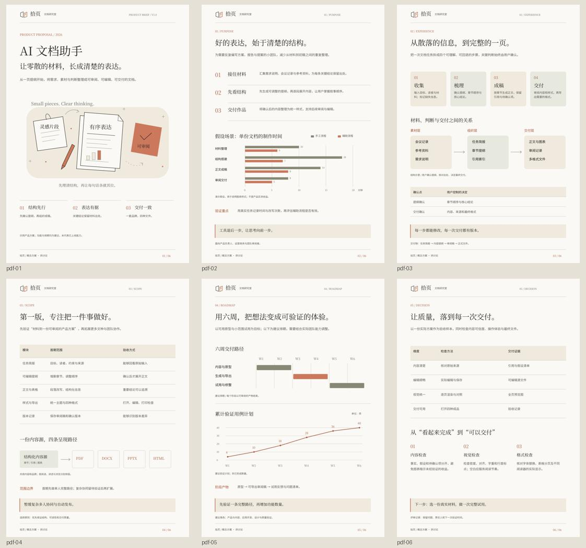
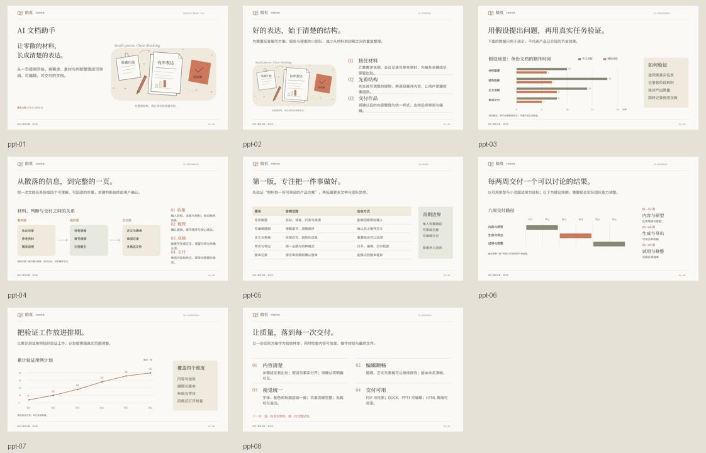

内容先行
先理解用途与读者，再梳理结论、证据和行动；不为了留白删掉关键内容。
暖纸、宋体、墨线与克制的陶土色。
一种设计语言，四种阅读节奏。
克劳德设计是一套可安装的中文文档设计技能。从内容结构出发，用比例、疏密与清楚的层级，把材料变成可以阅读的表达。
开始使用 ↓
先理解用途与读者，再梳理结论、证据和行动；不为了留白删掉关键内容。
暖纸为阅读留出时间，宋体建立层级，细线连接信息。用疏密，组织目光的停顿。
陶土色只点亮关键词、编号和转折。正文与版心保持严格对齐。
插画回应当前主题，图表回答具体问题；真实数据与演示假设清楚区分。
以阅读为尺度，
让设计退后，让思想向前。
字、线与留白都要有理由。设计的精致，来自信息被认真组织。
| HTML | 连续阅读 沿思路展开内容；窄屏重排，宽图表独立横向阅读。 |
|---|---|
| 一页有一页的秩序 用版心、页边、字级和分页，让目光知道在哪里停顿。 | |
| DOCX | 思考可以继续 原生段落与表格保持稳定层级，便于修改、审阅与协作。 |
| PPTX | 一屏讲清一个重点 按讲述拆分长文；观点放大，图文关系替你解释。 |
适用于 Codex、Claude Code 或其他能够读写本地文件的智能体。
请将 https://github.com/XiaoyeCodes/Anthropic-Design-Style 中的 anthropic-design-style 技能完整安装到当前智能体支持的 skills 目录，保留 SKILL.md、references、scripts、assets 和 agents。按 README 完成依赖安装与环境检查，再运行四格式示例验证；同名目录已存在时先比较，不覆盖我的修改。npx skills add XiaoyeCodes/Anthropic-Design-Style --skill anthropic-design-style --agent codex -g -y需要 Node.js 22.20+ 与 Git。安装后开启新会话；首次运行生成器时，另行安装本地依赖。完整安装指南 ↗
请用 $anthropic-design-style 根据以下材料制作一份中文方案。先梳理结论、证据与行动，再确定品牌和当前主题的原创线稿；沿用暖纸、宋体、墨线与克制的陶土强调。分别为 HTML、A4 PDF、可编辑 DOCX、16:9 PPTX 设计阅读节奏。保留来源与假设标注，最后逐页检查实际渲染。材料如下：……「拾页 · AI 文档助手」是一份实际可下载的排版案例。六页 A4、八张 16:9 演示稿，与原生 Word、离线 HTML 一起呈现同一种设计语言。


案例品牌仅属于案例；其中时间比较是演示假设，排期是建议计划。新项目应重新创作主题插画。
Python 3.10+、Node.js 22.20+，无需 API Key。仓库自带可再分发的中文字体和全部示例依赖清单。
git clone https://github.com/XiaoyeCodes/Anthropic-Design-Style.git
cd Anthropic-Design-Style
python scripts/bootstrap.py
python scripts/run.pymacOS / Linux 可将 python 换成 python3。运行库仅安装到仓库内；首次依赖安装需要联网。
参考生成器针对六页 A4 / 八张 PPT 案例优化。新文种、长文与不同数据范围需要调整布局。DOCX 正文与表格原生可编辑；PPTX 图表为可编辑形状。Office 字体外观须安装随附字体并实际渲染确认。
设计从 huashu-editorial-docs 的规范发展而来。README 采用 huashu-md-html 的设计师模式，影片由 huashu-motion 制作。项目代码与原创文档采用 MIT；字体分别保留 SIL OFL 许可。